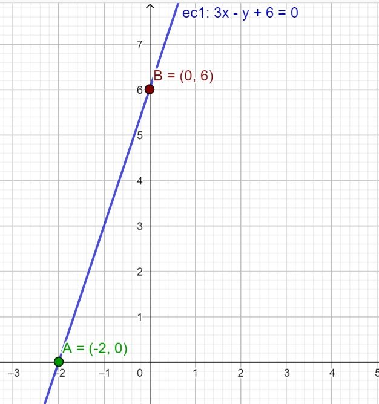
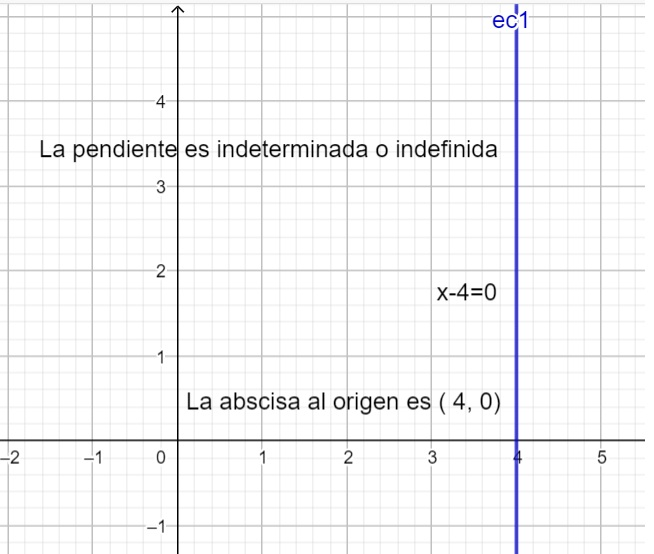
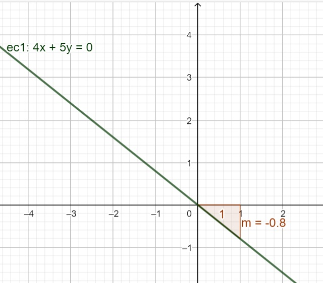

La forma general de la ecuación de la recta es:
𝐴𝑥+𝐵𝑦+𝐶=0.
A es el coeficiente de la variable “x”. B es el coeficiente de la variable “y”.
C es el término independiente en la ecuación general de la recta.
A partir de la ecuación general A, B 𝑦 C son números reales, con la condición de que A y B no sean simultáneamente nulos.
Si el término independiente C, no existe, la recta pasa por el origen de coordenadas. Si el coeficiente de 𝑦 (B)no existe, se trata de una recta vertical o perpendicular al eje 𝑦 Si el coeficiente de 𝑥𝐴 no existe, se trata de una recta horizontal o paralela al eje 𝑥
Características de la recta.
Pendiente de la recta:
AB Abscisa en el origen 𝑥=−C A Ordenada en el origen 𝑦=−CBA partir de l aecuación general de la recta se pueden determinar la pendiente, la abscisa al origen y la ordenada al origen.
Ejemplo 1. Calcula la pendiente de la recta 3𝑥−𝑦+6=0y los puntos donde interseca al eje 𝑥𝑒𝑦.Traza la grafica
Solución:
A partir de la ecuación general de la recta sabemos que A=3,B=−1 𝑦 C=6.
Para calcular la pendiente sustituimos en la fórmula 𝑚=− AB;𝑚=−3−1;𝑚=3
Para calcular la abscisa en el origen sustituimos en la fórmula 𝑥=−C A
𝑥=−63,𝑥=−2, se puede expresar como (-2, 0)
Para calcular la ordenada en el origen, sustituimos en la fórmula 𝑦=−CB
𝑦=−6−1,𝑦=6, se puede expresar como (0, 6)
Gráfica de la recta
El valor de la pendiente, la ordenada en el origen y la abscisa en el origen de la recta cuya ecuación general 3𝑥−𝑦+6=0son: 𝑚=3,𝑥=−2,𝑦=6, Abscisa en el origen A( -2, 0) Ordenada en el origen B(0, 6)
Ejemplo 2.
Describe las características de la siguiente ecuación de la recta 𝒙−𝟒=𝟎.Traza su grafica
Solución:
Apartir de la ecuación identificamos el valor de los coeficientes; A=𝟏,B=𝟎,C=−𝟒 Calcular la pendiente de la recta con la fórmula:
𝒎=− AB, sustituimos en la fórmula 𝑚=−10 el resultado de
la pendiente es indefinida ya que la división porcerono está definida.
El valor de la pendiente es indeterminada o indefinida. Para hallar la abscisa al origen sustituimos en la ecuación𝒙=−CA,𝑥=−−41=41=4 así que la abscisa al origenes; 4,0 Para hallar la ordenada al origen sustituimos en la ecuación 𝒚=−CB,𝑦=−−40no,hay
intersección con la ordenada en el origen, debido a que la división por cero no está definida.
Conclusión: De acuerdo a los resultados la recta corta en el punto (4,0) en el eje de las abscisas y es paralela
al eje vertical o eje de las ordenadas. Grafica del ejemplo 2. Como puedes observar si en la ecuación general el valor de B=0 la recta es paralela al eje vertical.
 Ejemplo 3. Determina las características de la recta 𝑦−7=0.Trazasugráfica.
A partir de la ecuación A=0 , B=1 y C=-7
Calculamos la pendientecon la fórmula 𝑚=− AB,𝑚=−01,𝑚=0
Se calcula la abscisa en el origen con la fórmula 𝑥=−C A,𝑥=−−70la abscisa al origen no está
definida ya que la división por cero no está definida.
Calculamos la ordenada en el origen con la fórmula 𝑦=−CB,𝑦 =−−71,𝑦=71=7 Así que la ordenada al origen es (0, 7)
Como se puede observar cuando A=0 la recta es paralela al eje “x” y su pendiente es igual a cero. La ordenada al origen es (0,7) Ejemplo 4. Determina las características de la ecuación 4x+5y=0. Traza su gráfica.
A partir de la ecuación, A=4, B= 5 y C=0, determinar la pendiente, la abscisa al origen y la ordenada en el origen.
Pendiente (m)
𝑚=− AB,𝑚=−45
Abscisa al origen (a, 0)
𝑥=−C A,𝑥=−04=0,𝑥=0
Ordenada al origen (0, b)
𝑦=−CB,𝑦=−05=0,𝑦=0

Actividades de contextualización Un servicio de televisión por cable cuesta $280 al mes y comprende 65 canales. Si deseas contratar el servicio MAS, que permite contratar más canales, el costo mensual es $25 pesos por cada canal solicitado. Solución